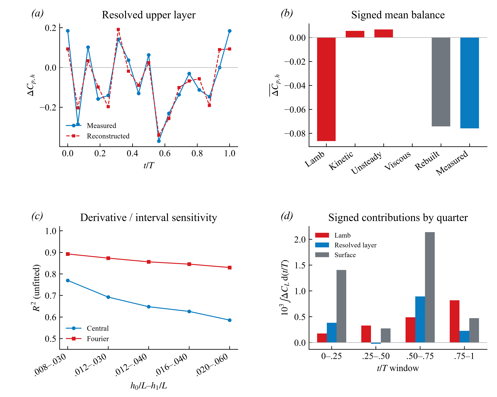
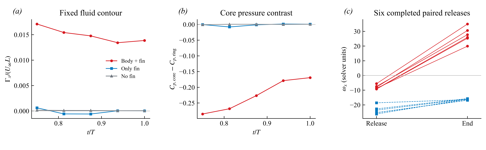
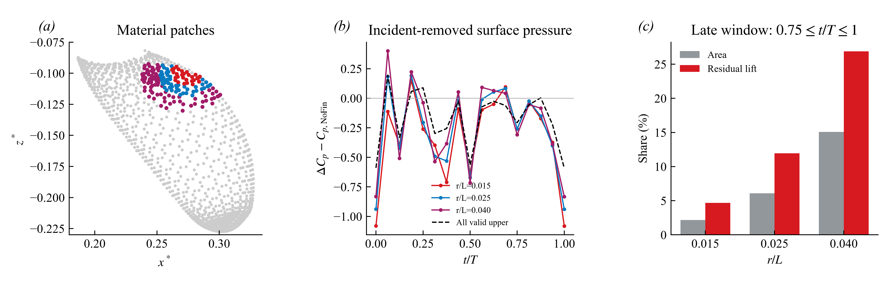
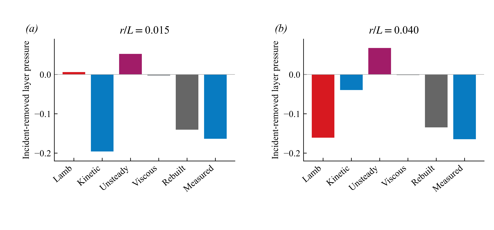

Orca 研究进度与报告合集
2026-10-23 · 代码、报告与配图 · 原始仿真数据留在本地
本轮新增：平均/瞬时闭合复核、RV⁺邻近材料面片分析、局部动量项比较。附近存在额外吸力集中，但不能将小邻域压力下降直接归给局部 Lamb 项。
完整中文报告（Markdown） · 英文草稿 · 下一步任务
1. 平均、瞬时与相位窗口

完整定义、分母与限制见中文报告；图中比例不是单涡升力贡献率。
2. 涡分支及同点释放对照

完整定义、分母与限制见中文报告；图中比例不是单涡升力贡献率。
3. RV⁺邻近材料面片压力

完整定义、分母与限制见中文报告；图中比例不是单涡升力贡献率。
4. 局部动量项的空间差异

完整定义、分母与限制见中文报告；图中比例不是单涡升力贡献率。
历史报告：23份去重记录
旧版、内部草稿和片段保留以追溯修正；先读最新报告。R19原路径缺两张配图，保留缺失标记。
- Orca 与 Dolphin 胸鳍几何比较 — orca_dolphin_20261008/comparison_report.html
- Orca 压力来源方法与验证 — orca_pressure_origin_20261022/Orca_压力来源_方法与验证.html
- Orca 上表面吸力来源 — orca_pressure_origin_20261022/Orca_压力来源_精简报告.html
- Baseline–NoFin：两条论文问题的原始数据检验 — mechanism/report.html
- Baseline 与 NoFin：受力和俯仰力矩实算 — baseline_nofin_loads_20261008/report.html
- 均匀密度质心处的俯仰载荷 — uniform_density/report.html
- Orca 胸鳍增升：涡机制、惯性响应与几何放大的定量区分 — force_partition_v2/Orca_涡与放大机制_定量研究.html
- Orca 胸鳍增升：涡机制、惯性响应与几何放大的定量区分 — force_partition_v2/内部草稿_涡与放大机制.html
- Orca：涡、压力与胸鳍增升的机制证据 — mechanism_chain_v5/Orca_机制研究_完整分析与验证.html
- Orca 胸鳍增升机制｜精简报告 — mechanism_chain_v5/Orca_涡_压力_升力_机制研究.html
- Orca 胸鳍增升机制：原始数据定量研究 — body_fin_mechanism_20261022/Orca_胸鳍增升机制研究.html
- naming_section — vortex_atlas_v10/naming_section.html
- Orca：主要涡结构逐支分类与对应 — vortex_atlas_v10/Orca_主要涡结构分类与逐支对应.html
- 涡结构调查已更新 — vortex_candidates_v7/Orca_未解涡结构与研究候选.html
- Orca｜身体涡质疑核查与旋向反转发现 — vortex_discovery_v9/Orca_身体涡核查与流向旋转反转.html
- Orca 涡结构：来源、命名与机制结论 — vortex_identity_v6/Orca_涡命名与新颖性核查.html
- Orca 涡命名核查：方法与文献 — vortex_identity_v6/Orca_涡命名核查_方法与文献.html
- Orca 涡命名与新颖性核查 — previous_report/Orca_涡命名与新颖性核查.html
- Orca 涡命名核查：方法与文献 — previous_report/Orca_涡命名核查_方法与文献.html
- Orca 涡结构：来源、命名与机制结论 — vortex_source_v8/Orca_涡结构来源与机制结论.html
- 胸鳍引起的推进与俯仰载荷重分配 — integrated_research_20261009/report.html
- Orca 分部 POD 与稀疏重建研究 — orca_pod_20261008/report.html
- audit_binary_findings — solver_groundtruth_20261003/audit_binary_findings.md